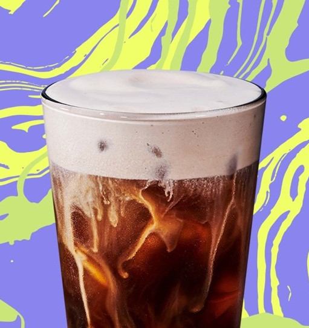
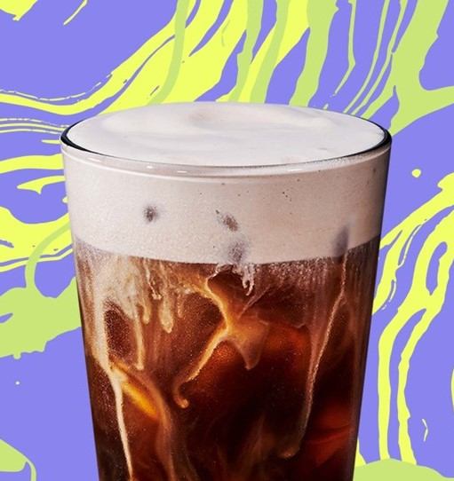
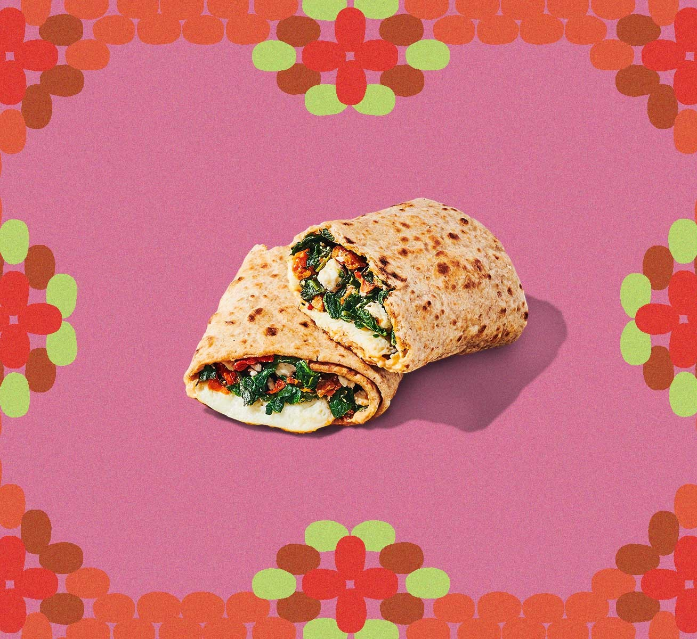
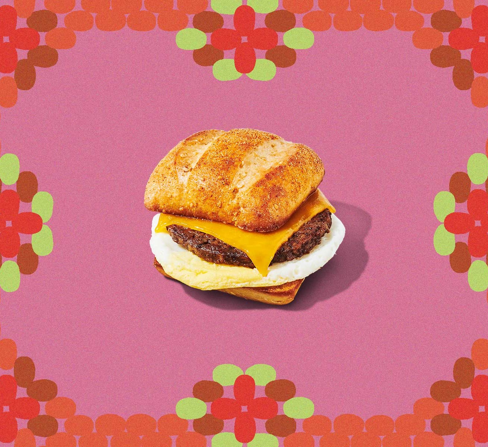

Chocolate
Cream Cold Brew
Chocolaty cold foam tops our
super-smooth cold brew
with notes of vanilla.
Chocolaty cold foam tops our
super-smooth cold brew
with notes of vanilla.
Introducing our vibrant new
Frozen Lemonade Starbucks
Refreshers® beverages: Strawberry
Açaí, Pineapple Passionfruit
and Mango Dragonfruit.

Go for a Mocha Cookie Crumble or
Caramel Ribbon Crunch
Frappuccino® blended beverage.

Cage-free egg whites,
spinach and feta cheese wrapped
in a whole-wheat tortilla.
An Impossible™ Sausage Patty
Made From Plants, a cage-free
fried egg and Cheddar on
